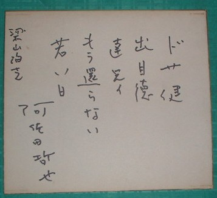
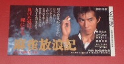
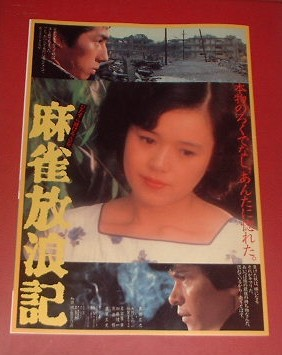
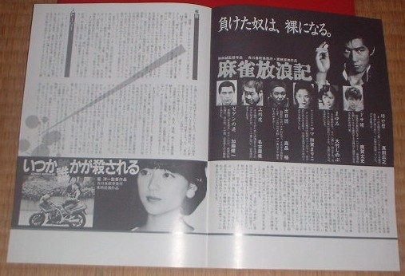
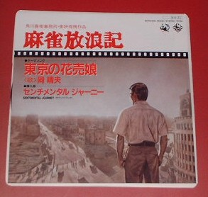

Mahjan talk 雀話。
（４５）麻雀放浪記グッズ
今日は全国100万人の阿佐田哲也ファンに贈るささやかな自慢話（笑） ファンのタイプもいろいろだが、その中にはコレクター系のファンがいる。一言で云えばσ(-_-)みたいなタイプ。。。
そんなコレクター系ファンにとって、関連グッズはなんでも収集の対象。そのグッズも、価値があるのは金では手に入らないような物。で、今回は骨董的には低い値段しかつかないとしても、コレクターにとっては垂涎の的のモノ（？）を少し紹介することにした。まずは麻雀放浪記の登場人物の名前の入った直筆の色紙。
「浅見了さんへ」、ではなく「梁山泊さん」となっているが、これにはわけがある。親しくしていた某プロが名古屋で梁山泊という名前の雀荘をオープンした。彼は一時、阿佐田宅に出入りしていたので、オープンに際し、色紙をプレゼントしてもらった。数年後、事情があって梁山泊は閉店した。とはいえ彼はこの色紙を大事にしていた。
しかしさらにそれから数年後、ある事情でσ(-_-)に嫁入りした（そのプロを脅して手に入れたしたという噂があるらしいが、それはウソだ（笑））。麻雀博物館で、これのバージョン違いの色紙コピーが販売されているが、うちのは本物だ。(‾^‾)
次は昭和50年（だっけ？）、真田浩之主演で映画化された麻雀放浪記の関連モノ。だいたいなんでも映画化だとか漫画化されたものは出来が悪い。ひどいものになると原作を完膚無きまでに破壊しつくす。しかしこの麻雀放浪記はよかった。和田誠監督が原作に忠実だったことと、演技陣もところを得て充実していた。
＃最初、「監督・和田誠」と聞いたときには、（若手なので）原作をブチ壊さなければいいが、と心配した。
まずはその入場券の半券。さっき云ったように骨董的にはヘタすると値段ゼロ。でも欲しいとなると大金をはたいても手に入らないグッズ。入場券の半券なんてその典型だ。（笑） いまから思えば、もう１枚買って、完品をコレクションしておけばよかった。（笑）
いまでも入場すると、映画の内容を紹介した簡単なパンフをくれる。しかし当時は今よりかなり立派なパンフをくれた。見開きページだけのものであるが、今のものよりはるかに金がかかっている。実はこのパンフ、２枚ある。こんど何かの機会に賞品にしようかな？

最後は映画館の中で販売していた主題歌「東京の花売り娘」のレコード。岡春夫が歌っている（裏面は挿入曲「センチメンタルジャーニー」）。
ジャケットの図柄は坊や哲が東京の焼け野原を眺めているところ。う〜ん、どうみても某少年コミック誌の主人公よりカッコいい。（笑）